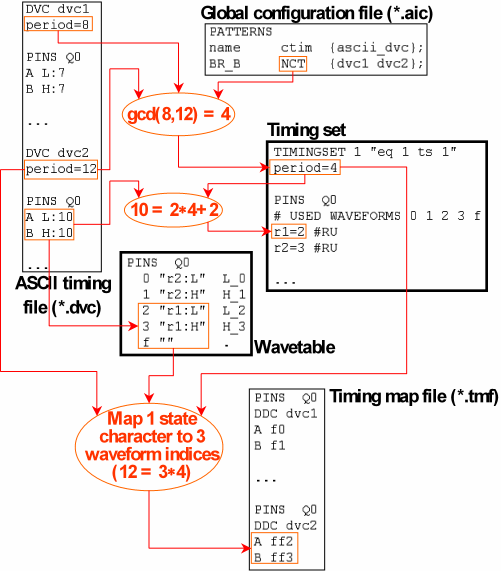

The Input Columns
The following list explains all the input columns of the PATTERNS section within the global configuration file. The columns are ordered alphabetically by their name.
- {[vec_ascii_dvc] ascii_dvc [shot]}(mandatory): specifies the ASCII
device cycles of the ASCII timing file that are to be used for the timing. If you specify more
than one ASCII device cycle the names must be separated by white spaces. The entries belonging
to this column must be enclosed by curly brackets in every line even if only one entry is
present.
If the device cycles in the ASCII timing file are different from those in the ASCII vector file, you can specify which vector device cycle corresponds to which timing device cycle. If this sub-column is present, it will be transferred to the pattern configuration files (*.vbc).
If the header line specifies the ASCII device cycle column as {vec_ascii_dvc ascii_dvc}, then the entry
{vec1 tim2 vec2 tim1}
will be interpreted as two ordered pairs, where the first element of the pair denotes an ASCII device cycle in the ASCII vector file, and the second an ASCII device cycle in the ASCII timing file. If you put the column at the end of the table, you can improve the readability of the entry by inserting a line break between the two pairs as follows:
... {vec_ascii_dvc ascii_dvc};
... {vec1 tim2
vec2 tim1};
Of course, if the format of the column is specified as {ascii_dvc}, then the entry will be interpreted in both formats as containing four ASCII device cycles from the ASCII timing file.
Note that when you use the {vec_ascii_dvc ascii_dvc} format then all ASCII device cycles must be specified as a pair, even if the ASCII device cycle has the same name in the ASCII timing and ASCII vector file.
The sub-column shot must be present if the shots column is present and contains a value > 1 for at least one pattern. In this case, one and only one ASCII device cycle must be specified for every shot. If the same ASCII device cycle is to be used for all shots, you can use the wildcard character *. An example of the format {vec_ascii_dvc ascii_dvc shot} is
{vec tim *}
The "shot" concept is described in Using Shots: the shots Column.
- avc_file (optional): specifies the name of the ASCII vector file. The default is that the name consists of the pattern name, as specified in the name column, and of the extension *.avc or *.avc.gz. If you specify this parameter, the avc_pipe parameter must be omitted. This entry is transferred to the vector configuration file.
- avc_pipe (optional): specifies a Unix command which converts a vector source file into regular ASCII interface vector data. If you specify this parameter, the avc_file parameter must be omitted. This entry is transferred to the vector configuration file.
- avc_time (optional): specifies the name of a file whose timestamp controls the execution of the Unix command specified in the avc_pipe column. The command is only executed if the timestamp of the binary vector file (as specified by name) is earlier than the timestamp of the avc_time file. This entry is transferred to the vector configuration file.
- context (optional): specifies the context for the pattern. The context must be defined in the pin configuration file. Contexts control whether pins are used as differential or as single-ended pins. The default is the context with the fixed name DEFAULT. In this context all pins are single-ended. This entry is transferred to the vector configuration file.
- ctim (optional): specifies whether timing set switches are admitted
between the vectors of the pattern. The allowed values are NCT (no
switches admitted), and CT (switches admitted).
NCT is the default. If the pattern is an element of a pattern group, the
selected value must be consistent with the value specified for the group; see The GROUPS Section.
If CT is selected, different timing sets may be generated for different ASCII device cycles of the pattern, depending on the ASCII timing file. The mapping from ASCII device cycles to timing set numbers is passed to the vector translation in the pattern configuration file (*.vbc); see The Pattern Configuration File (*.vbc). If the ASCII device cycles of two successive ASCII vectors within the pattern are mapped to different timing sets, then the vector translation will insert a CTIM instruction between these vectors into the sequencer program from the information in this file. For details see Inserting CTIM Between Vectors.
If NCT is selected, only one timing set will be created for the pattern. If more than one ASCII device cycle is associated with the pattern, the test system cycle length of this timing set will be derived from the greatest common divisor (abbreviated as ‘gcd') of the different ASCII periods as follows:
- If gcd ≥ minimaltest systemcyclelength, then test systemcyclelength = gcd.
- If gcd < minimaltest systemcyclelength ≤ smallestASCIIperiod, then test system cycle length = smallestASCIIperiod.
- In all other cases the timing translation fails.
In cases a and b the mapping from state characters to waveform DC/DC power units in the timing map file will be m : n with n > 1 for at least some of the associated ASCII device cycles. For details see Calculating the Lengths of the State Character and the Index Sequences.
Note that a CTIM instruction is inserted before the first vector even if NCT is selected. To suppress this instruction, specify the option -T in the v2b_options column.
The following figure shows an example for case a:

- equations (optional): specifies the EQUATIONS
blocks of the ASCII timing file (see EQUATIONS Blocks, SPECS Blocks, and Equation Variables) that are to be integrated into the
equation set of the pattern. If you specify more than one EQUATIONS block
for the same pattern, you must separate the names by commas.
If you omit this parameter, then all EQUATIONS sections that exist in ASCII timing file will be merged into one EQUATIONS block within the equation set, provided that they do not contradict each other.
- name (mandatory): specifies the name of a pattern; the name can consist of up to 128 alpha-numeric characters. By default, the ASCII interface expects that the name of the ASCII vector file for the pattern consists of the name specified here and of the extension *.avc or *.avc.gz. If the ASCII vector file has a different name, it must be specified in the avc_file column.
- port(optional): specifies the port to which the pattern belongs. The default is the default port @, which contains all pins.
- shots (optional): specifies how many shots are to be created for the pattern. The default is 1, which means that no shots are generated. For details on using shots see Using Shots: the shots Column.
- {specs} (optional): specifies the SPECS blocks
of the ASCII timing file (seeEQUATIONS Blocks, SPECS Blocks, and Equation Variables) that are to be integrated into one or more
specsets. The entries belonging to this column must be enclosed with curly brackets in every
line. In the output version, this column consists of two subcolumns, specs
and hp_sps, which specifies the specset number, or (for multi-port
setups)hp_specification., which contains the name of the
specification.
You can define more than one specset. The SPECS blocks that are to be integrated into one specset must be separated by commas. Block groups to be converted into different specsets must be separated by blanks.
The entry
{spb1,spb2 spb3,spb1},
for example, will be translated into two specsets, one from SPECS blocks spb1 and spb2, and the other from spb3 and spb1.
If you omit this parameter, then all existing SPECS sections will be merged into one specset, provided that they do not contradict each other.
- type (optional): The type of the pattern (label). The allowed values
are MAIN, SVEC, SJMP, and
MDMY. MAIN is the default. The information of
this column ends up as an input parameter for v2b (see Calling v2b Directly). It must be consistent with the content of the GROUPS
section (see The GROUPS Section).
MDMY (Main DuMmY) is a special dummy type which is unknown to SmarTest and only occurs in the global configuration file. Entries with this type are not transferred to the vector configuration file. This can be used to create different timings for one and the same vector file. For a possible application in connection with multi-port timings see The MULTI_PORT_TIMING Statement.
- v2b_options (optional): Here you can specify parameter options that
are to be passed to v2b for translation of the ASCII vector file that
belongs to the pattern. The options specified here are transferred to the vector configuration
file. If more than one option is specified, they must be enclosed by curly brackets.
One example would be the option -T, which suppresses the insertion of a CTIM instruction in the sequencer program before the first vector. For other possible options, see Calling v2b Directly.
- xfact (optional): specifies the x-mode factor of the pattern. In
general, the allowed values are 1 through 10 for standard pins, and 1 through 8 (except 5 and 7)
for fast pins. 1 is the default. For details on using x-modes see Using X-Modes: the xfact Column.
In two cases, a higher number is allowed:
- 12 and 16 can be used for NP3G-XS (see Defining the Clock for Fast Differential Receive Pins: ssb on/off).
- In connection with HXA multiplexing, numbers m * n, where m is the
x-mode and n is the multiplexing factor (which can be 2 or 4), up to 32 can be used.
Note that you will get a correct HXA setup only if you specify the product of the
intended x-mode and the multiplexing factor. See Mapping HXA Pins To Pin Scale Pins and Vector Translation for HXA Multiplexing.
For Pin Scale Digital Cards, you can also specify a fractional x-mode factor in the format <m>/<n>. Then m state characters will be mapped to n test system cycles. Note however that m and n will be canceled down as far as possible. For example, if you specify 6/4, then 3 state characters will be mapped to 2 test system cycles.